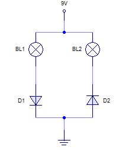
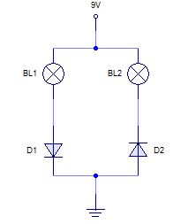

Problema 1
En los siguientes circuitos, indica qué sucede con las bombillas que aparecen en ellos, teniendo en cuenta la posición de los diodos.
 



Fundamento Teórico
Un diodo permite el paso de corriente solo cuando está polarizado en directa (Ánodo positivo, Cátodo negativo). Si está en inversa, actúa como un interruptor abierto.
Análisis Circuito "a"
Rama Izquierda: El diodo D1 está en inversa (el positivo de la pila de 9V llega al cátodo/barra). No pasa corriente por BL1.
Rama Derecha: El diodo D2 está en directa (positivo al ánodo/triángulo). Pasa corriente por BL2.
Resultado: Solo se enciende BL2.
Análisis Circuito "b"
Es un circuito serie. D1 está en directa, pero D2 está en inversa.
Resultado: No se enciende ninguna bombilla (circuito abierto por D2).
Análisis Circuito "c"
La corriente se divide. D1 está en directa. D2 está en inversa.
Resultado: Se enciende BL1. BL2 permanece apagada.
Análisis Circuito "d"
Ambos diodos están en paralelo con sus respectivas bombillas y ambos están polarizados en directa.
Resultado: Se encienden ambas bombillas BL1 y BL2.